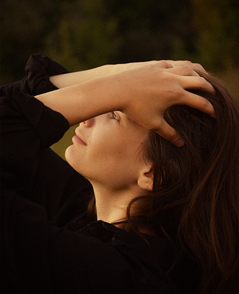
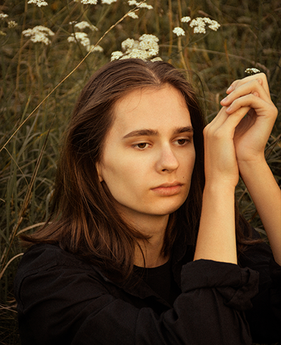
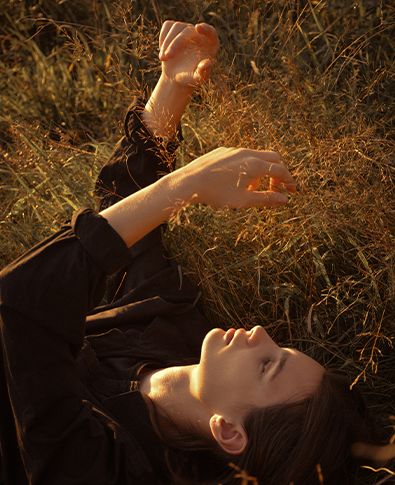

Фото зроблені без штучного світла, у тополях за містом,
фільтрів на фотоапараті не було
На фото дівчина не професійна модель
Фото зроблені без штучного світла, у тополях за містом,
фільтрів на фотоапараті не було
На фото дівчина не професійна модель
ABOUT ME
Я почала свою кар’єру
з пейзажної фотографії,
а потім перейшла до архітектурної
фотографії. Я була вражена візерунками,
які могли створювати людські руки.
Я поставила собі за мету показати це всьому світу.
На мій погляд, фотографи
розвиваються все життя, я почала
фотографувати з дитинства на
фотоапарат своєї мами, вже тоді
маленька Я мріяла про щось більшею.
Yulia Konovalchuk
POSING
I know more than 100 different
poses and I will help you.
POSING
A large amount of colored light for
unusual shots.
POSING
Unusual locations for each photo shoot,
chosen exactly for your image.
MORE
by Yulia Konovalchuk
BOOK HERE
Email:
akk.47@gmail.com
My Location:
Lviv, Bibrka
OPEN FOR COLLABS